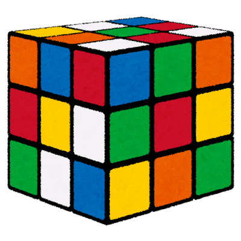
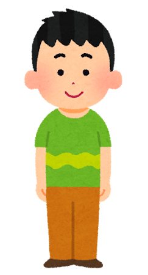
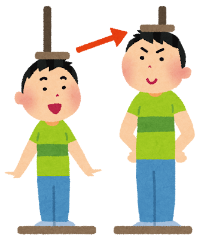

六面世界の創世記
RECORD: GENESIS-00かつて神は、果てなき混沌の深淵より「六つの面を持つ世界」を作り出した。
月曜日から土曜日まで、神は日ごとに新たな一面を紡ぎ上げた。そして巡り来たる日曜日、満ち足りた静寂の中で深き休息を取ったという。
月曜日は白の世界。
火曜日は赤の世界。
水曜日は青の世界。
木曜日は緑の世界。
金曜日は黄の世界。
土曜日は橙の世界。
鮮やかに彩られし六つの領域は、互いに響き合い、乱れなき完全なる秩序を保っていた。
だが、失われし外典には続きが記されている。六面世界の中心部、何者の視線も届かぬ不可視の深淵には、決して開かれてはならぬ「七つ目の世界」が封じられていると。そこに眠るは、世界を無へと還す《災い》か、あるいは幸福を齎す《希望》か……。
悠久の昔より、七つ目の深淵が解き放たれぬよう、世界の均衡をその手で繋ぎ止めてきた者たちがいた。世界の歪みを指先に感じ取り、乱れ狂う六面を瞬時に正しき調和へと導き続ける守護者――人は彼らを「スピードキューバー（SpeedCuber）」と呼ぶ。
彼らが手にする立方体、それこそが六面世界の崩壊を防ぎ止める《世界の封印具》に他ならないのだ。
良かった。大学に合格した。これで僕も晴れて大学生だ。
サークル活動は何をしようか…。クイズかキューブのどちらかにしよう。
「Cube Voyage」というサイトを教えてもらった。キューブの揃え方だけでなく、スピードキューバー向けの専門用語まで全部書かれている。
キューブの構造についてや、回転記号についての記事はとても良い。
今日は初めてキューブの公式大会に出場したが、酷い結果だった…。
平均20秒を超えてしまった。必ずリベンジする。
今日は初めて公式大会で入賞することができた。この調子でもっと練習するぞ！
第一問

🎲';">第二問

🧍';">
📈';">